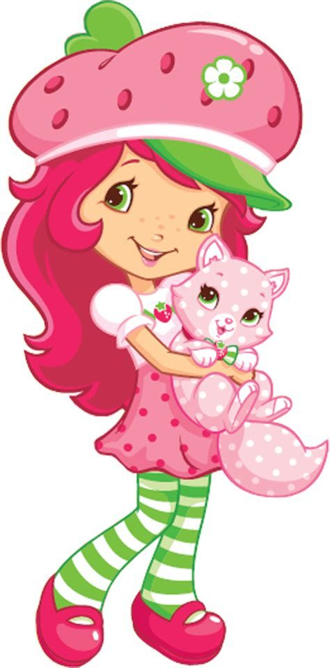
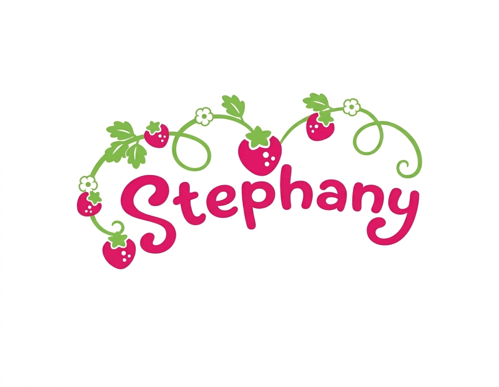
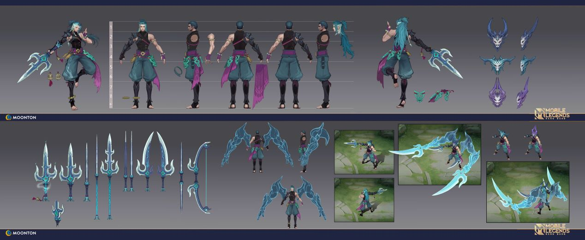

Apresentação Pessoal
Meu nome é Stephany, tenho 16 anos e esse é a segunda tentativa de interface fofa que tô fazendo e por milagre tá saindo certo.
Interesses: Tudo que for de nerd, anime e muita muita arte e de todo tipo.


Curso: INFORMÁTICA | Turma: 3 ano
Criado em:
Meu nome é Stephany, tenho 16 anos e esse é a segunda tentativa de interface fofa que tô fazendo e por milagre tá saindo certo.
Interesses: Tudo que for de nerd, anime e muita muita arte e de todo tipo.
Atualmente foco meus estudos em lógica de programação e marketing digital, já trabalho com público então com oque eu tiver aprendendo vou usar pra melhorar meu trabalho!.
Tenho um sonho que no fundo considero besta pelo lugar onde nasci, mas de verdade, quando eu crescer quero trabalhar para uma empresa grande jogos como a RIOT dona do LOL.

Aprendendo na base das lágrimas.